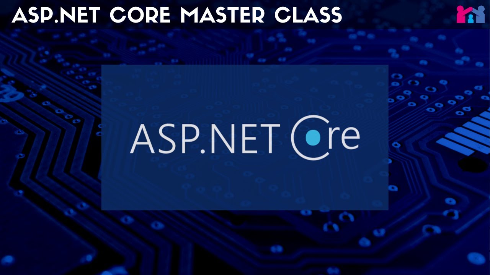
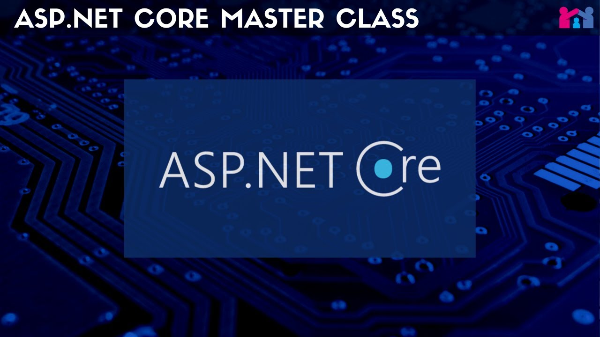

HTML (HyperText Markup Language) is the main language used to create the structure of web pages. It tells the browser how to display the content and what elements should be on the page.
Each HTML tag defines the type and placement of content on the page. HTML is the foundation of web development, and every website starts with it.


 
